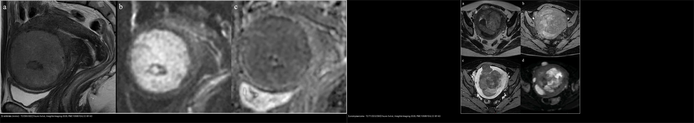
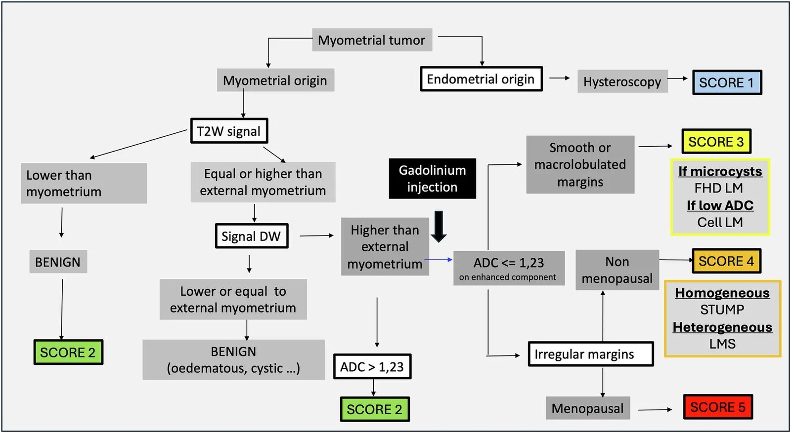
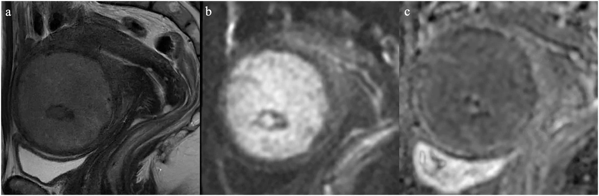
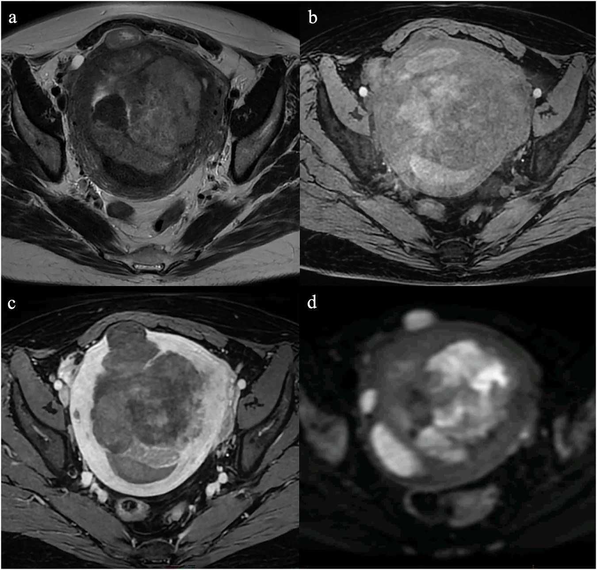
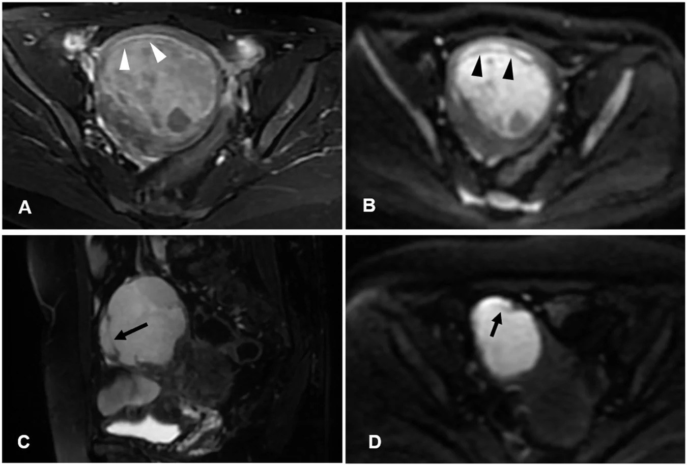
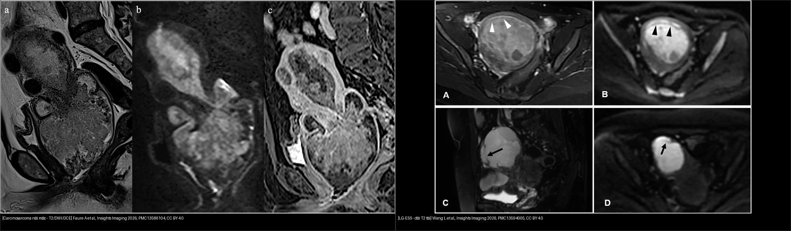
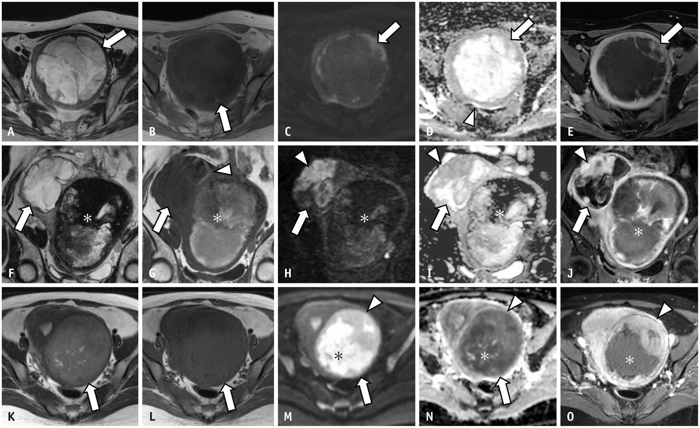

526 — Sarcoma tử cung & carcinosarcoma vs u xơ / Uterine sarcoma vs leiomyoma
Tags: pattern:khoi-co-tu-cung pattern:xam-lan-co vung:tu-cung score:ADC protocol:MRI-tieu-khung
Mức chắc chắn (certainty): tổng hợp y văn (literature synthesis) — nhóm tự biên từ 2 bài tổng quan/bẫy hình ảnh mở CC BY (Insights into Imaging 2026), 1 nghiên cứu đa trung tâm myxoid LMS CC BY-NC (Korean J Radiol 2026) và 1 nghiên cứu ADC — không gắn ca nguyên văn đơn lẻ.
1. Tổng quan bệnh học – cơ chế hình ảnh
- Vấn đề lâm sàng: sarcoma tử cung (uterine sarcoma) chỉ chiếm 3–9% u tử cung, trong đó leiomyosarcoma (LMS) 41–60%, rồi sarcoma mô đệm nội mạc (ESS) và adenosarcoma. Carcinosarcoma là u hỗn hợp biểu mô–trung mô (chuyển sản), < 1% ung thư tử cung nhưng gánh ~15% tử vong liên quan. Điểm chết người: đa số khối cơ tử cung là u xơ (leiomyoma) lành, nên nếu đọc nhầm sarcoma thành u xơ → morcellation (cắt nhỏ u qua nội soi) gieo rắc ổ bụng, giảm sống còn. Ngược lại, gọi oan u xơ biến thể thành sarcoma → cắt tử cung oan. MRI tồn tại chính vì bài toán phân tầng này.
- TẠI SAO tín hiệu (vật lý MRI + mô bệnh):
- U xơ thường (hyaline leiomyoma): khối collagen xơ dày đặc, ít nước tự do → T2W tối; mật độ tế bào thấp + chất nền xơ hạn chế khuếch tán nước → DWI tối, ADC cao. Đây là "chữ ký" lành tính.
- Sarcoma: mật độ tế bào rất cao → nước nội bào bị "nhốt", khuếch tán khó → DWI sáng + ADC thấp; u lớn nhanh vượt cấp máu → hoại tử (T1 tối, T2 sáng hỗn hợp, ngấm thuốc viền/kém) + xuất huyết (T1 có vùng sáng do methemoglobin) + mất vỏ giả, bờ thâm nhiễm cơ lành.
- Myxoid LMS (cạm bẫy): chất nền nhầy (myxoid) giữ nước nhiều → T2 rất sáng + ADC cao (2,08 ×10⁻³ mm²/s theo Saida 2026), trông "lành" dù vẫn là sarcoma ác (dấu "vân cẩm thạch" marbled appearance).
- Ngưỡng định lượng bắt buộc:
- ADC ≤ 0,9 ×10⁻³ mm²/s (đo trên phần u còn sống, hạn chế khuếch tán nhất, tránh vùng xuất huyết/hoại tử) → nghi sarcoma. Rizescu 2026 (cắt lớp ADC, b = 800–1000 s/mm²): sarcoma 0,813 vs u xơ không điển hình 1,050; cutoff ≤ 0,892 → Se 100% / Sp 84,6%, AUC 0,923.
- "Khóa loại" (rule-out) rất mạnh: T2W tối + DWI tối + ADC > 1,1–1,23 ×10⁻³ mm²/s → NPV ~100% (không phải LMS).
- Ngưỡng theo biến thể (Faure 2026, Bảng 2): cellular / FH-deficient (FHD) / STUMP / LMS đều có ADC < 1,1**; còn nang (cystic) **> 2, phù (edematous) > 1,2, myxoid > 2 — vì vậy ADC một mình KHÔNG đủ, phải ghép với bờ + bối cảnh.
- Yếu tố lâm sàng quyết định mức độ lo ngại: mãn kinh + khối lớn lên nhanh + LDH tăng; tiền sử xạ trị vùng chậu (yếu tố nguy cơ carcinosarcoma sau xạ).
- Phân loại WHO 2020 (nhóm sarcoma mô đệm): mảng u mô đệm nội mạc (ESN — lành), LG-ESS (tuổi trung bình 39, sống 5 năm 91%), HG-ESS (tuổi trung bình 61, sống 5 năm 33%), u sarcoma không biệt hóa (UUS). Nhóm cơ trơn: LMS, STUMP (không chắc ác tính tiềm năng).
2. Mẫu hình + chẩn đoán phân biệt theo vị trí (gamut)
- Khối trong cơ (myometrium) — gamut chính: u xơ + biến thể (cellular, FHD, myxoid, bizarre) → STUMP → LMS; ESS dạng thâm nhiễm (giả adenomyosis); lạc nội mạc trong cơ (adenomyosis).
- Khối trong lòng tử cung (endometrial cavity): polyp nội mạc, ESN, LG-ESS lồi vào lòng, ung thư nội mạc, carcinosarcoma, adenosarcoma.
- Ba câu hỏi gỡ rối mọi khối cơ tử cung: (1) bờ? (rõ/trơn vs thâm nhiễm/không đều) (2) T2 tối hay sáng? (3) DWI/ADC ra sao?
- Đặc trưng từng thực thể:
- U xơ thường: bờ rõ, T2 tối đều, DWI tối, ADC cao, ngấm kém.
- Cellular/FHD leiomyoma (mimic sarcoma): T2 trung gian, DWI sáng, ADC thấp (< 1,1) — nhưng bờ trơn đều và có dải/chấm T2 tối (speckled, cord-like) do sợi collagen; FHD hay vi nang T2 sáng + ngấm mạnh, gợi ý hội chứng FH.
- Myxoid leiomyoma: T2 rất sáng + giả nang, ngấm kém, ADC cao (> 2) — dễ nhầm nang.
- LMS: khối lớn, bờ không đều/thâm nhiễm, T2 trung bình–cao không đồng nhất, xuất huyết/hoại tử, DWI sáng, ADC thấp.
- STUMP: không phân biệt được bằng hình ảnh với LMS lành-không-lành — chẩn đoán mô bệnh (số phân bào, hoại tử u).
- LG-ESS: "dải T2 tối" trong u (cơ lành còn sót), dạng "giun bò" (worm-like), T2/DWI sáng, ADC thấp, ngấm mạnh; hay lan theo mạch cạnh tử cung.
- HG-ESS: giống LG-ESS nhưng phá hủy nhiều hơn, ngấm kiểu "lông vũ" (feather-like).
- Carcinosarcoma: khối đặc lớn trong lòng nội mạc, lan qua lỗ trong cổ tử cung, T2 không đồng nhất (xuất huyết/hoại tử), DWI hạn chế mạnh, ngấm tiến triển; hạch tới 35%, di căn xa > 10%.
- Adenosarcoma: T2 sáng do myxoid, ngấm mạnh, DWI thường không hạn chế.
3. Bảng so sánh phân biệt (ma trận đối chiếu)
| Thực thể (entity) | Hình ảnh điển hình | Chốt vào (rule-in) | Chốt loại (rule-out) | Gợi ý xác nhận |
|---|---|---|---|---|
| U xơ thường (hyaline leiomyoma) | Bờ rõ, T2 tối đều, DWI tối | T2 tối + DWI tối + ADC cao | T2 trung bình/cao + DWI sáng → không phải u xơ thường | MRI cơ bản, không cần sinh thiết |
| U xơ tế bào / FHD (cellular/FH-deficient) | Bờ rõ, T2 trung gian, dải/chấm T2 tối, ADC < 1,1 | Bờ trơn + mảnh ghép collagen (speckled) | Bờ thâm nhiễm + mất cấu trúc → nghi sarcoma | So phim cũ (u xơ tăng chậm), tư vấn FH (da/cơ/tử cung nhiều u) |
| U xơ myxoid (myxoid leiomyoma) | T2 rất sáng + giả nang, ADC > 2, ngấm kém | Bờ rõ + ngấm kém + không xuất huyết | Ngấm mạnh, "vân cẩm thạch", mãn kinh → nghi myxoid LMS | Đo ADC vùng đặc, DCE |
| Leiomyosarcoma (LMS) | Khối lớn, bờ không đều, nhân hoại tử/xuất huyết, T2 hỗn hợp | ADC ≤ 0,9 + bờ thâm nhiễm + xuất huyết | ADC > 1,23 + T2 tối → loại trừ (NPV ~100%) | Sinh thiết/mô bệnh sau cắt; cấm morcellation khi nghi ngờ |
| STUMP | Giống LMS hoặc u xơ, không phân biệt được | Không có dấu hiệu hình ảnh đặc trưng | Không loại trừ được trên hình ảnh | Chẩn đoán mô bệnh (số phân bào, hoại tử u) |
| LG-ESS | Khối cơ, dải T2 tối trong u, "giun bò", T2/DWI sáng | Dải T2 tối + thâm nhiễm + lan mạch cạnh tử cung | T2 tối đều + DWI tối → u xơ | Sinh thiết; tìm ổ ngoài tử cung (buồng trứng, mạc treo) |
| HG-ESS | Khối lớn hỗn hợp, phá hủy cơ nhiều, ngấm "lông vũ" | Ngấm lông vũ + phá hủy cơ rộng | Bờ rõ + không xâm lấn → ít nghĩ | Mô bệnh + hóa mô miễn dịch |
| Carcinosarcoma | Khối đặc lòng tử cung, lan qua cổ tử cung, T2 hỗn hợp | Khối nội mạc lớn + xuất huyết/hoại tử + hạch | Tổn thương nhỏ, đồng nhất, khu trú nội mạc → ít nghĩ | Sinh thiết nội mạc; CT ngực/bụng tìm di căn |
| Lạc nội mạc trong cơ (adenomyosis) | Cơ dày, chấm T2 sáng, ổ T1 sáng (xuất huyết), DWI tối | Chấm/nang T2 sáng + ổ T1 sáng + DWI tối | Khối đặc DWI sáng thật → nghi ESS | T2 axial + T1 fat-sat |

Trái: u xơ tế bào (cellular leiomyoma) — T2 trung gian, DWI sáng, ADC thấp ~0,9 nhưng bờ trơn đều. Phải: leiomyosarcoma — khối lớn bờ không đều, T2/T1 hỗn hợp do xuất huyết và hoại tử, DWI sáng. Nguồn: Faure A et al., Insights into Imaging 2026 (PMC13586104), CC BY 4.0. Ảnh ghép letterbox, giữ nguyên tỷ lệ.Dấu hiệu chốt then chốt
- "Dải T2 tối" trong u (conserved hypointense myometrial bands) = sợi cơ lành bị u ESS thâm nhiễm còn sót lại → chốt ESS hơn là u xơ/adenomyosis (adenomyosis cũng có chấm sáng nhưng DWI tối, không phải dải).
- "Vân cẩm thạch" (marbled appearance) trong vùng T2 rất sáng = dấu bổ trợ cho myxoid LMS — tránh xếp nhầm lành vì ADC cao.
- Đo ADC đúng chỗ: vùng u còn sống, hạn chế khuếch tán nhất; vùng xuất huyết/hoại tử cũng cho ADC thấp giả → nếu đo sai sẽ dương tính giả nặng thêm.
4. Protocol chụp + hệ phân độ/điểm chuẩn hóa
- Protocol MRI tiểu khung khối cơ tử cung:
- T2W không xóa mỡ, ≥ 2 bình diện (axial + sagittal): bắt buộc — đây là chuỗi tối ưu đánh giá vùng chuyển tiếp (JZ) và mặt phân cách u–cơ (bờ).
- T1W (axial/sagittal ± fat-sat): nhận diện xuất huyết (T1 sáng) và mỡ (lipoleiomyoma — mất tín hiệu khi fat-sat).
- DWI b ≥ 800 s/mm² (dùng 1.000) + bản đồ ADC: "tính thật" của hạn chế khuếch tán. Cảnh báo T2 shine-through ở u myxoid.
- T1W + Gd động học (DCE, fat-sat), 0,1–0,2 mmol/kg: đánh giá hoại tử (khuyết ngấm), đường cong động học, lan mạch.
- Không chọc hút/sinh thiết trước MRI (gây nhiễu xuất huyết); nếu cần mô bệnh thì sau MRI.
- Hệ điểm khối cơ tử cung (Zlotykamien-Taieb, 2025): gộp T2 + DWI + ADC + bờ thành điểm nguy cơ 1–5. U thường điểm thấp; u xơ tế bào (mimic) thường điểm 3; khối mãn kinh nghi ác điểm 5. Bờ (đều vs thâm nhiễm) là yếu tố phân biệt then chốt nhất.

Sơ đồ gộp T2 + DWI + ADC + bờ thành điểm nguy cơ cho khối cơ tử cung. Nguồn: Faure A et al., Insights into Imaging 2026 (PMC13586104), CC BY 4.0.flowchart TD
A[Khối trong cơ tử cung] --> B{T2W tối đều + DWI tối?}
B -->|Có| C[ADC cao > 1,23 -> u xơ lành, loại sarcoma NPV ~100%]
B -->|Không| D{T2 trung bình/cao + DWI sáng?}
D -->|Không| C
D -->|Có| E[Bờ khối?]
E -->|Trơn đều| F{Bối cảnh: mãn kinh? lớn nhanh? LDH?}
F -->|Không| G[U xơ biến thể: cellular/FHD/myxoid -> theo dõi/DCE]
F -->|Có| H[Nghi sarcoma: đo ADC vùng còn sống]
E -->|Thâm nhiễm/không đều| H
H --> I{ADC vùng còn sống}
I -->|<= 0,9| J[Nghi sarcoma mạnh -> MRI đầy đủ + sinh thiết, CẤM morcellation]
I -->|> 1,23| K[Nghi ít; nhưng nếu T2 rất sáng + vân cẩm thạch -> vẫn nghi myxoid LMS]
I -->|0,9-1,23| L[Vùng xám -> ghép bờ + tuổi + DCE + hội chẩn/mô bệnh]
5. Biến thể bình thường và cạm bẫy
- Myxoid LMS "giả lành": ADC cao (> 1,14, trung vị 1,24) do chất nền nhầy; áp ngưỡng 0,9 sẽ xếp 83% là "có khả năng lành". Chìa khóa cứu: T2 rất sáng + "vân cẩm thạch" + bờ — chấp nhận cutoff myxoid 1,000 (Se 92% / Sp 86% theo Saida 2026) nhưng vẫn không hoàn hảo.
- U xơ tế bào / FHD (giả ác): ADC thấp < 1,1 ở u lành → dương tính giả. Cứu bằng bờ trơn đều + dải/chấm T2 tối + bối cảnh (FH: tiền sử da/cơ, nhiều u).
- Xuất huyết/nhồi máu trong u xơ lành cũng cho ADC thấp → đo vùng u tươi, không đo trong hốc xuất huyết.
- STUMP: về hình ảnh không tách được khỏi LMS/u xơ — đừng hứa "loại trừ sarcoma" chỉ dựa vào MRI.
- Adenomyosis ↔ LG-ESS: u ESS thâm nhiễm cho "giun bò" + T2/DWI sáng; adenomyosis cho chấm T2 sáng + ổ T1 sáng + DWI tối.
- T2 shine-through ở u nhiều nước/my xơ làm DWI "sáng giả" → luôn xem ADC, không chỉ nhìn DWI.
- Độ tin cậy của ADC thấp: đồng thuận người đọc chỉ ICC 0,44 → ADC là bằng chứng bổ trợ, không phải phán quyết đơn lẻ.
- Morcellation: tuyệt đối tránh khi khối chưa định danh lành (nguy cơ gieo rắc sarcoma).
6. Tự lượng giá — Blind Quiz ngay trên trang tĩnh
Ca 1 — Nữ tiền mãn kinh, khối cơ tử cung tình cờ, không triệu chứng. Nhìn T2/DWI/ADC, mô tả và biện luận.

- Gợi ý lâm sàng (clinical context): tiền mãn kinh, phát hiện tình cờ, khối trong cơ.
- Câu hỏi: T2 tối hay trung gian? DWI/ADC ra sao? Bờ khối? Có phải sarcoma không?
Bấm để hiện đáp án (findings + chẩn đoán)
- Dấu hiệu (findings): khối trong cơ, T2 trung gian, DWI sáng, ADC thấp ~0,9 ×10⁻³ mm²/s, nhưng bờ trơn đều (không thâm nhiễm) → Ghép bờ + bối cảnh (không mãn kinh, không lớn nhanh).
- Chẩn đoán (diagnosis): u xơ tế bào (cellular leiomyoma) — mimic sarcoma, xếp điểm 3 theo Zlotykamien-Taieb. Vì bờ trơn đều + mảnh ghép collagen (dải/chấm T2 tối) chỉ điểm u xơ; ADC thấp ở đây do mật độ tế bào cao lành tính, không phải sarcoma.
- Nguồn ảnh: Faure A et al., Insights into Imaging 2026, PMC13586104, Fig. 5, CC BY 4.0.
Ca 2 — Nữ mãn kinh, khối tử cung lớn lên nhanh, đau. Nhìn ảnh đa chuỗi, chốt chẩn đoán và thái độ xử trí.

- Gợi ý lâm sàng: mãn kinh, khối lớn, lớn nhanh.
- Câu hỏi: dấu hiệu nào gợi ác tính? Đo ADC ở đâu? Xử trí mổ có gì phải tránh?
Bấm để hiện đáp án (findings + chẩn đoán)
- Dấu hiệu (findings): khối lớn bờ không đều/thâm nhiễm, T2 không đồng nhất, có nhân xuất huyết (T1 sáng) và hoại tử (khuyết ngấm thuốc), DWI sáng, ADC thấp.
- Chẩn đoán (diagnosis): leiomyosarcoma (LMS) — vì bờ thâm nhiễm + hoại tử/xuất huyết + ADC ≤ 0,9 ở vùng u còn sống + bối cảnh mãn kinh. Đo ADC trong vùng đặc còn sống, tránh hốc xuất huyết/hoại tử. Cấm morcellation; mổ lấy u nguyên khối/cắt tử cung, gửi mô bệnh.
- Nguồn ảnh: Faure A et al., Insights into Imaging 2026, PMC13586104, Fig. 7, CC BY 4.0.
Ca 3 — Nữ 50 tuổi, khối thâm nhiễm cơ tử cung, T2/DWI sáng, có "dải tối" trong u. Chẩn đoán?

- Gợi ý lâm sàng: 50 tuổi, khối thâm nhiễm trong cơ, chưa mãn kinh.
- Câu hỏi: dấu hiệu "dải T2 tối trong u" nghĩa là gì? Phân biệt với adenomyosis?
Bấm để hiện đáp án (findings + chẩn đoán)
- Dấu hiệu (findings): khối cơ thâm nhiễm, T2 sáng + DWI sáng, có dải T2 tối trong u (sợi cơ lành bị u thâm nhiễm còn sót).
- Chẩn đoán (diagnosis): LG-ESS (sarcoma mô đệm nội mạc độ thấp) — dải T2 tối + dạng "giun bò" + True DWI restriction. Phân biệt adenomyosis: adenomyosis có chấm/nang T2 sáng + ổ T1 sáng + DWI TỐI, không có dải T2 tối của ESS.
- Nguồn ảnh: Wang L et al., Insights into Imaging 2026, PMC13594005, Fig. 3, CC BY 4.0.
Ca 4 — Ảnh ghép: hai khối "trong lòng tử cung" trên T2/DWI. Bệnh nào là carcinosarcoma, bệnh nào là ESS?

- Gợi ý lâm sàng: một ca khối đặc lớn lòng tử cung lan qua cổ; một ca khối mô đệm thâm nhiễm cơ.
- Câu hỏi: dấu hiệu phân biệt? Hệ quả điều trị?
Bấm để hiện đáp án (findings + chẩn đoán)
- Trái: carcinosarcoma — khối đặc lớn trong lòng nội mạc, lan qua lỗ trong cổ tử cung, T2 không đồng nhất do xuất huyết/hoại tử, DWI hạn chế mạnh; nguy cơ hạch tới 35%, di căn > 10% → phân giai đoạn hạch + CT ngực/bụng, thường xạ trị-hóa trị.
- Phải: LG-ESS — khối mô đệm thâm nhiễm cơ với dải T2 tối trong u, DWI sáng; tiên lượng tốt hơn nhiều (sống 5 năm ~91% ở LG-ESS so với carcinosarcoma ác nhanh).
- Nguồn: Faure A (PMC13586104, CC BY 4.0) + Wang L (PMC13594005, CC BY 4.0).
Cạm bẫy nguy hiểm nhất — myxoid LMS

- Gợi ý: khối cơ tử cung T2 rất sáng, nhiều "vân cẩm thạch"; ADC đo được cao (1,14–1,24 ×10⁻³ mm/s).
- Câu hỏi: ADC cao có an tâm không?
Bấm để hiện đáp án (findings + chẩn đoán)
- Dấu hiệu (findings): khối T2 rất sáng với "vân cẩm thạch" (marbled appearance), vùng nhầy ngấm thuốc từng phần; ADC cao hơn ngưỡng 0,9.
- Chẩn đoán (diagnosis): myxoid leiomyosarcoma (MLMS) — chất nền nhầy làm T2 sáng + ADC cao giả lành; áp ngưỡng cũ xếp 83% là "likely benign". Chìa khóa: T2 rất sáng + vân cẩm thạch + bờ, hạ ngưỡng myxoid 1,000 ×10⁻³ mm²/s (Se 92% / Sp 86%).
- Nguồn ảnh: Saida T et al., Korean J Radiol 2026, PMC13537877, Fig. 4, CC BY-NC 4.0 (nguyên bản, không crop/ghép).
Bài liên quan chéo
- 520 – U xơ cơ tử cung (FIGO 0–8), adenomyosis & dày nội mạc
- 525 – Ung thư nội mạc & cổ tử cung: FIGO trên MRI
- 528 – Dị dạng tử cung bẩm sinh
- 535 – Ung thư buồng trứng, phúc mạc & u Krukenberg
- 572 – Hạch trong ung thư phụ khoa: SLN & PET-CT
- 500 – Tổng quan Hệ Vú & Sản Phụ khoa
Ảnh
- 8 ảnh CC BY 4.0 / CC BY-NC 4.0 (Insights into Imaging 2026 ×2, Korean J Radiol 2026) + 2 ảnh ghép CC BY 4.0. Nguồn + giấy phép từng ảnh trong
images/CREDITS.md.
Không dùng để chẩn đoán độc lập khi chưa có người hướng dẫn.